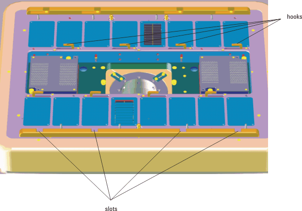
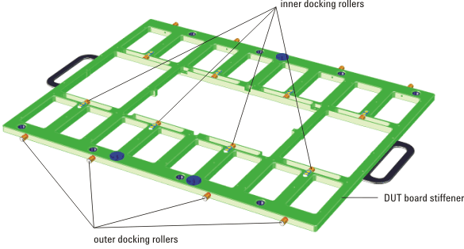

Final docking
The slots and hooks on the DUT interface (the first figure below) engage docking rollers on the DUT board stiffener (the second figure below). This presses the DUT board stiffener tightly against the DUT interface. The slots on the DUT interface engage the outer docking rollers of the DUT board stiffener, and the hooks on the DUT interface engage the inner docking rollers of the DUT board stiffener. This part of the docking process uses a pneumatically-operated mechanism on the test head.


Functional changes
- Introduced before SmarTest 6.3.2